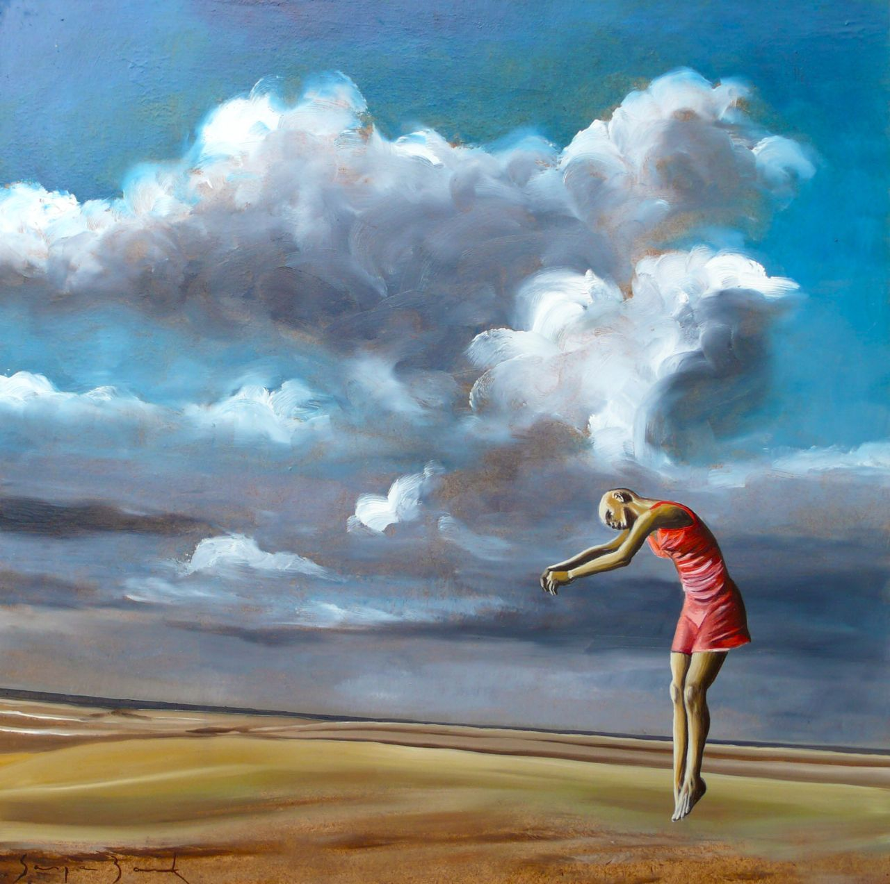

Beloe Derevo Hotel, Sankt Petersburg | 464 evaluări de la oaspeți | Booking.com
 Direct la pagina principală KčSe încarcă
Alegeți limba preferată. Vorbim română și alte 43 limbi.
Cele mai folosite limbi în Republica Cehă
Čeština English (UK) English (US) Русский Slovenčina DeutschToate limbile
English (UK) English (US) Deutsch Nederlands Français Español Español (AR) Español (MX) Català Italiano Português (PT) Português (BR) Norsk Suomi Svenska Dansk Čeština Magyar Română 日本語 简体中文 繁體中文 Polski Ελληνικά Русский Türkçe Български العربية 한국어 עברית Latviski Українська Bahasa Indonesia Bahasa Malaysia ภาษาไทย Eesti Hrvatski Lietuvių Slovenčina Srpski Slovenščina Tiếng Việt Filipino Íslenska Înregistrați-vă proprietatea Înregistrați-vă Autentificare Sejururi Zboruri Închirieri de maşini Atracţii Taxiuri de la/la aeroport Asistență legată de coronavirus (COVID-19)Vă rugăm să verificați restricțiile de călătorie. Este posibil ca deplasările să fie permise numai în anumite scopuri și în special, este posibil ca cele în scop turistic să nu fie permise.
Citiți mai mult
Pagina principală Toate hotelurile Hoteluri Apartamente Rusia Hoteluri Apartamente Saint Petersburg Region Hoteluri Apartamente Sankt Petersburg Hoteluri Apartamente Turism Închirieri auto Kalininskiy HoteluriOferte la Beloe Derevo Hotel (Hotel), Sankt Petersburg (Rusia)
Informații și prețuri: Facilităţi Informații importante Evaluările oaspeților (464)Hotel Beloe Derevo Hotel
Ideal pentru 2 călători. Locație și facilități potrivite pentru cei care călătoresc în pereche Ideal pentru 2 călători transfer de la și/sau la aeroport. Transferul de la şi/sau la aeroport este disponibil în schimbul unei taxe suplimentare. Puteți solicita acest lucru la pasul următor. transfer de la și/sau la aeroport Beloe Derevo Hotelulitsa Demyana Bednogo 3, Kalininskiy, 195274 Sankt Petersburg, Rusia – Locație excelentă - arată harta
După rezervare, toate detaliile proprietății, inclusiv numărul de telefon și adresa, vor fi furnizate în confirmarea rezervării și în contul dumneavoastră. Închide × Beloe Derevo Hotel Rezervaţi acumGarantați-vă un preț excelent la Beloe Derevo Hotel - proprietate evaluată cu 9 de clienții recenți.
Introduceți perioada și începeți.
Garantați-vă un preț excelent la Beloe Derevo Hotel - proprietate evaluată cu 9 de clienții recenți.
Introduceți perioada și începeți.
9,0 Superb 464 evaluăriFacilităţi
8,9
Curățenie
9,3
Confort
9,1
Raport calitate/preţ
9,1
Locaţie
8,4
Total
9,0
WiFi gratuit
8,6
Персонал, завтрак, чистота, удобный матрас, есть всё необходимое. Отличное месторасположения для пациентов госпиталя Вредена.
Elena RusiaДля автопутешественников очень удобно ( у отеля своя охраняемая парковка). Чисто, уборка каждый день. Очень приветливый персонал.
Artem RusiaБлизкое размещение от НИИ ВРЕДЕНА.Такси 100-150р.Самый лучший вариант в этом районе!!!Цена -качество = 5 баллов из 5.
Oleg RusiaПросто все отлично! И дизайн, и чистота, и парковка, и люди, работающие в этом отеле и для этого отеля. Спасибо за приятные часы пребывания в Белом Дереве!
Vyacheslav RusiaБыла в номере на одного. Очень чисто в ванной и заселили почти под ночь, войдя в положение и не отменив бронь номера. Завтраки - шведский стол, ничего прямо выдающегося, но довольно разнообразно. Буду советовать друзьям!
Лариса RusiaОчень удобное расположение при путешествии из Москвы в Карелию. Честный завтрак, приветливые сотрудники.
Roman RusiaДанный вариант проживания бронировала для коллег из Москвы. Лично не была, но полностью доверяю мнению проживающих в отеле коллег. Они передают огромное спасибо персоналу отеля. Мне абсолютно не стыдно перед гостями из столицы. Более того, гости полностью удовлетворены: номера рядом друг с другом, уютные, чистые, тихие, полностью соответствуют изображению на фото и описанию, кровати большие. Питание качественное, очень вкусное:) Персонал внимательный. Всё это позволило коллегам эффективно поработать и восстановиться между рабочими днями. Сегодня они покидают наш город. Будут рекомендовать отель своим московским товарищам.
Екатерина Rusiaотель чистый,красивый,уютный.Удобные кровати.Вкусные,разнообразные завтраки
Ирина RusiaБыли одну ночь, 2 номера, один для взрослых, другой для детей. В номерах было хорошо, главное чисто. Кровати хорошие, для меня жестковат был матрас, другим было нормально.
Olga RusiaВстреча персонала на ресепшн, завтраки на Европейском уровне, постельное белье, большая ортопедическая кровать! Номера чистые, светлые! Вообще, я бы им уже 4 дала. Тихо, звукоизоляция хорошая.
Светлана RusiaPersonal
9,3 Evaluat la superlativ pentru:Paturi foarte confortabile Evaluat la superlativ pentru:
Paturi foarte confortabile Evaluat la superlativ pentru:
Paturi foarte confortabile Evaluat la superlativ pentru:
Check-in excelent Evaluat la superlativ pentru:
Paturi foarte confortabile Evaluat la superlativ pentru:
Check-in excelent Imaginea anterioară a proprietăţii Următoarea imagine cu proprietatea Imaginea proprietății Imaginea proprietății Imaginea proprietății Imaginea proprietății Imaginea proprietății Imaginea proprietății Imaginea proprietății Imaginea proprietății Imaginea proprietății Imaginea proprietății Imaginea proprietății Imaginea proprietății Imaginea proprietății Imaginea proprietății Imaginea proprietății Imaginea proprietății Imaginea proprietății Imaginea proprietății Imaginea proprietății Imaginea proprietății Imaginea proprietății Imaginea proprietății Imaginea proprietății Imaginea proprietății Imaginea proprietății Imaginea proprietății Imaginea proprietății Imaginea proprietății Imaginea proprietății
Beloe Derevo Hotel
9,0 Superb 464 evaluări 9,3Personal
Evaluat la superlativ pentru:Paturi foarte confortabile Evaluat la superlativ pentru:
Paturi foarte confortabile Evaluat la superlativ pentru:
Paturi foarte confortabile Evaluat la superlativ pentru:
Check-in excelent Evaluat la superlativ pentru:
Paturi foarte confortabile Evaluat la superlativ pentru:
Check-in excelent Ce au preferat clienții: „Персонал, завтрак, чистота, удобный матрас, есть всё необходимое. Отличное месторасположения для пациентов госпиталя Вредена.” Elena Rusia „Для автопутешественников очень удобно ( у отеля своя охраняемая парковка). Чисто, уборка каждый день. Очень приветливый персонал.” Artem Rusia „Близкое размещение от НИИ ВРЕДЕНА.Такси 100-150р.Самый лучший вариант в этом районе!!!Цена -качество = 5 баллов из 5.” Oleg Rusia „Просто все отлично! И дизайн, и чистота, и парковка, и люди, работающие в этом отеле и для этого отеля. Спасибо за приятные часы пребывания в Белом Дереве!” Vyacheslav Rusia „Была в номере на одного. Очень чисто в ванной и заселили почти под ночь, войдя в положение и не отменив бронь номера. Завтраки - шведский стол, ничего прямо выдающегося, но довольно разнообразно.” Лариса Rusia „Очень удобное расположение при путешествии из Москвы в Карелию. Честный завтрак, приветливые сотрудники.” Roman Rusia „Данный вариант проживания бронировала для коллег из Москвы. Лично не была, но полностью доверяю мнению проживающих в отеле коллег. Они передают огромное спасибо персоналу отеля.” Екатерина Rusia „отель чистый,красивый,уютный.Удобные кровати.Вкусные,разнообразные завтраки” Ирина Rusia „Были одну ночь, 2 номера, один для взрослых, другой для детей. В номерах было хорошо, главное чисто. Кровати хорошие, для меня жестковат был матрас, другим было нормально.” Olga Rusia „Встреча персонала на ресепшн, завтраки на Европейском уровне, постельное белье, большая ортопедическая кровать! Номера чистые, светлые! Вообще, я бы им уже 4 дала. Тихо, звукоизоляция хорошая.” Светлана Rusia
Măsuri suplimentare pentru sănătate și siguranță
Această proprietate a luat măsuri suplimentare pentru sănătate și igienă, pentru a vă oferi certitudinea că siguranța dvs. este prioritarăMăsuri suplimentare pentru sănătate și siguranță
Facilități de siguranță Personalul urmează toate protocoalele de siguranță impuse de autoritățile locale Articolele utilizate în comun, precum meniurile imprimate, revistele, pixurile și hârtia au fost eliminate Dezinfectant pentru mâini în unitatea de cazare și în zonele esențiale Proces de verificare a sănătății oaspeților Trusă de prim-ajutor disponibilă Curățenie și dezinfectare Se utilizează substanțe de curățenie eficiente împotriva coronavirusului Lenjeria de pat, prosoapele și rufele sunt spălate conform recomandărilor autorităților locale Unitatea de cazare este dezinfectată zilnic Oaspeții pot renunța la serviciul de curățenie al unității de cazare pe durata sejurului Distanțare fizică Opțiune de plată fără numerar disponibilă Se respectă regulile de distanțare fizică Separatoare sau bariere fizice amplasate între personal și oaspeți în zonele în care acest lucru este necesar Siguranța alimentelor și băuturilor Distanțare fizică în zonele de luat masa Mâncarea poate fi livrată oaspeților în unitatea de cazare Toată vesela, tacâmurile, paharele și alte articole de masă au fost igienizate 9,3 Curăţenie Pe baza a 464 evaluăriLocated in Saint Petersburg, 13 km from Petrovsky Stadium, Beloe Derevo Hotel provides accommodation with a restaurant, private parking and a bar. The property is set 13 km from Anna Akhmatova Museum, 14 km from Summer Garden and 14 km from Church of the Savior on Spilled Blood. The accommodation offers a 24-hour front desk, airport transfers, an ATM and free WiFi throughout the property.
A buffet breakfast is available daily at the hotel.
Guests at Beloe Derevo Hotel will be able to enjoy activities in and around Saint Petersburg, like hiking and cycling.
Faberge Museum is 14 km from the accommodation, while Palace Square is 14 km away. The nearest airport is Pulkovo Airport, 27 km from Beloe Derevo Hotel.
Cuplurile apreciază în mod deosebit această locaţie. I-au dat scorul 8,4 pentru un sejur pentru 2 persoane.
Beloe Derevo Hotel a întâmpinat clienții Booking.com începând cu 1 aug 2017
Cele mai apreciate facilități
WiFi gratuit inclus parcare transfer de la și/sau la aeroport camere pentru nefumători restaurant recepţie deschisă nonstop barIdeale pentru cupluri – acestea au evaluat facilitățile cu 8,9 pentru un sejur pentru 2 persoane.
Bancomat: Aveţi nevoie de numerar? La această proprietate există un bancomat.
Oaspeții apreciază...
낍 Locație de top: evaluată la superlativ de clienții recenți (8,4)
끉 Doriți să aveți parte de un somn odihnitor? Acest hotel a primit un scor foarte mare pentru paturile sale confortabile.
Info mic dejun
bufet
뀄 WiFi gratuit
Clienţii apreciază în mod constant WiFi ca fiind excelent
끸 Parcare privată la hotel
Clienți loiali
끖 Aici oaspeții revin mai des decât la alte proprietăți.
Rezervaţi acum Salvaţipentru a reţine să rezervaţi
Salvat în 860 liste
Profitați acum de acest preț excelent pentru sejurul următorPrimiți confirmare imediată cu anulare GRATUITĂ la majoritatea proprietăților de pe website-ul nostru!
Găsiți o politică de anulare care vi se potriveșteÎncepând cu 6 aprilie 2020 se va aplica politica de anulare pe care ați ales-o, indiferent de circumstanțele legate de coronavirus. Vă recomandăm să rezervați o opțiune cu anulare gratuită în cazul în care va trebui să vă modificați planurile de călătorie.
Citiți mai multVă rugăm să consultați condițiile de rezervare
Pentru rezervările efectuate pe sau după 6 aprilie 2020, vă sfătuim să aveți în vedere riscul asociat coronavirusului (COVID-19) și măsurile luate de guvern în această privință. Dacă nu alegeți un tarif flexibil, este posibil să nu aveți dreptul la rambursarea sumei. Solicitarea de anulare va fi gestionată de proprietate pe baza policii alese și a legii pentru protecția consumatorului, dacă se aplică. În această perioadă incertă, vă recomandăm să rezervați o opțiune cu anulare gratuită. Dacă planurile dvs. se schimbă, veți putea anula gratuit până la expirarea perioadei de anulare gratuită.
Capacitate Tipul camerei + Nr. maxim de adulţi: 1. Nr. maxim de copii: 1 Cameră single standard 1 pat de o persoană Arată preţuri S-a produs o eroare. Vă rugăm încercați mai târziu. + Nr. maxim de adulţi: 2. Nr. maxim de copii: 1 Cameră dublă sau twin standard 2 paturi de o persoană Arată preţuri S-a produs o eroare. Vă rugăm încercați mai târziu. + Nr. maxim de adulţi: 2. Nr. maxim de copii: 1 Cameră Deluxe dublă sau twin 1 pat de o persoană sau 2 paturi de o persoană Arată preţuri S-a produs o eroare. Vă rugăm încercați mai târziu. + Nr. maxim de adulţi: 2. Nr. maxim de copii: 1 Cameră dublă sau twin fără ferestre 2 paturi de o persoană sau 1 pat dublu Arată preţuri S-a produs o eroare. Vă rugăm încercați mai târziu. Rezervări de ultim moment în Sankt Petersburg 2 proprietăți ca Beloe Derevo Hotel tocmai au fost rezervate în ultimele 15 minute Împrejurimile hotelului * Oaspeților le-a plăcut să se plimbe prin zonă! Locație excelentă - arată harta Vedeți disponibilitățile Ce se află în apropiere Universitatea Politehnică de Stat Sankt Petersburg 3,1 km Saint Petersburg Academic University 3,6 km Grand Canyon Shopping Centre 3,7 km Restaurante și cafenele Restaurant Баден Баден 1 km Cafenea/bar Gatsby bar 1 km Restaurant Токио Сити 1,1 km Cafenea/bar Караоке-бар Крыша 1,7 km Supermarketuri și magazine alimentare Supermarket Пятерочка 0,5 km Supermarket Перекресток 1,1 km Principalele atracții Grădina de vară 10,3 km Biserica Mântuitorului Însângerat 11 km Muzeul Rusesc 11,1 km Palatul de iarnă 11,2 km Muzeul Anna Akhmatova 11,2 km Muzeul Ermitaj 11,2 km Gazprom Arena Stadium 11,3 km Faberge Museum 11,4 km Catedrala Sf. Isac 12 km Teatrul Mariinski 13,1 km Peisaje naturale Lac Муринский ручей 0,3 km Transport public Metrou Grazhdansky Prospekt 2,1 km Metrou Stația de metrou Akademicheskaya 2,6 km Metrou Stația de metrou Politekhnicheskaya 3 km Metrou Prospekt Prosvescheniya 3,3 km Metrou Ozerki 3,3 km Metrou Devyatkino 3,8 km Metrou Stația de metrou Ploshchad Muzhestva 4 km Aeroporturi în apropiere Aeroportul Pulkovo 26,6 km * Toate distanțele sunt măsurate în linie dreaptă. Distanțele efective de călătorie pot diferi.4 motive pentru a alege Beloe Derevo Hotel
De ce să rezervați prin noi
Prețuri imbatabile
Administrați-vă online rezervările
Vorbesc 2 limbi
Rezervarea este sigură
Vedeți disponibilitățile Facilități oferite de Beloe Derevo Hotel Facilităţi excelente! Scor din comentarii: 8,9
Cele mai apreciate facilități
WiFi gratuit inclus parcare transfer de la și/sau la aeroport camere pentru nefumători restaurant recepţie deschisă nonstop barExterior
mobilier exteriorAnimale de companie
Animalele de companie nu sunt acceptate.
Activităţi
Galerii de artă temporare ciclism În afara locației drumeţii În afara locației bibliotecăMâncăruri și băuturi
cafenea la proprietate ciocolată sau fursecuri Cost suplimentar fructe Cost suplimentar sticlă de apă vin/șampanie Cost suplimentar bufet potrivit copiilor meniu masă pentru copii Cost suplimentar meniuri cu diete speciale (la cerere) bar restaurantInternet
Gratuit! Internet wireless este disponibil în întregul hotel şi este gratuit.
Parcare
Este posibilă parcarea privată la proprietate (este necesară rezervare) şi se pot percepe taxe.
parcare pentru persoane cu handicap parcare pe stradă parcare păzităServicii de recepție
Factură disponibilă la cerere check-in/check-out privat bancomat cameră de bagaje recepţie deschisă nonstopDivertisment și servicii pentru familii
canale TV pentru copii cărți, DVD-uri, muzică pentru copiiServicii de curățenie
Menaj zilnic lustruire pantofi curăţătorie chimică Cost suplimentarFacilități business
fax/copiator Cost suplimentar săli de conferinţă şi petreceri Cost suplimentarSiguranță
Extinctoare Camere de supraveghere în afara proprietății Camere de supraveghere în zonele comune Alarmă de fum Alarmă de securitate Securitate non-stop seifGeneral
serviciu de transfer transfer aeroport (cost suplimentar) serviciu de transfer (cost suplimentar) zonă pentru fumători fumatul interzis în toate spaţiile publice şi private cameră cu facilităţi antialergice încălzire prânz la pachet camere izolate fonic lift suită nupţială facilităţi pentru persoane cu mobilitate redusă camere pentru nefumători ziareAccesibilitate
chiuvetă joasă de baie accesibil cu scaunul cu rotileFacilități de siguranță
Trusă de prim-ajutor disponibilă Proces de verificare a sănătății oaspeților Dezinfectant pentru mâini în unitatea de cazare și în zonele esențiale Articolele utilizate în comun, precum meniurile imprimate, revistele, pixurile și hârtia au fost eliminate Personalul urmează toate protocoalele de siguranță impuse de autoritățile localeDistanțare fizică
Separatoare sau bariere fizice amplasate între personal și oaspeți în zonele în care acest lucru este necesar Se respectă regulile de distanțare fizică Opțiune de plată fără numerar disponibilăCurățenie și dezinfectare
Oaspeții pot renunța la serviciul de curățenie al unității de cazare pe durata sejurului Unitatea de cazare este dezinfectată zilnic Lenjeria de pat, prosoapele și rufele sunt spălate conform recomandărilor autorităților locale Se utilizează substanțe de curățenie eficiente împotriva coronavirusuluiSiguranța alimentelor și băuturilor
Toată vesela, tacâmurile, paharele și alte articole de masă au fost igienizate Mâncarea poate fi livrată oaspeților în unitatea de cazare Distanțare fizică în zonele de luat masaLimbi vorbite
engleză rusăVedeți disponibilitățile Informații importante Beloe Derevo Hotel primește cereri speciale - trimiteți la pasul următor!
Check-in
Începând cu ora 14:00
La check-in oaspeţilor li se cere să prezinte un document de identitate cu fotografie şi un card de credit
Check-out
Până la ora 12:00
Anulare/
plată în avans
Politicile de anulare şi de plată în avans variază în funcţie de tipul de cazare. Vă rugăm să introduceţi datele şederii dvs. şi să verificaţi condiţiile camerei cerute de dvs.
Copii şi paturi
Politici pentru copii
Copiii de orice vârstă sunt bine-veniți.
La această proprietate, copiii sunt considerați adulți începând cu vârsta de 7 ani.
Pentru a vedea informațiile corecte despre prețuri și capacitate, vă rugăm să adăugați în căutare numărul de copii care vă însoțesc și vârstele acestora.
Politici despre pătuțuri și paturi suplimentare
Această proprietate nu are capacitate pentru pătuțuri.
Această proprietate nu are capacitate pentru paturi suplimentare.
Nicio restricţie de vârstă
Nu există o vârstă minimă pentru check-in
Animale de companie
Animalele de companie nu sunt acceptate.
Carduri acceptate la acest hotel
Beloe Derevo Hotel acceptă aceste carduri și își rezervă dreptul de a bloca temporar o sumă anterior sosirii dumneavoastră.
Beloe Derevo Hotel acceptă aceste carduri și își rezervă dreptul de a bloca temporar o sumă anterior sosirii dumneavoastră.
Vedeți disponibilitățile Detalii
La check-in, trebuie să prezentați un document de identitate cu fotografie și un card de credit.Vă rugăm să reţineţi că satisfacerea tuturor cererilor speciale se va face funcţie de disponibilitate şi că se pot aplica taxe suplimentare.Evaluări verificate 100% · Clienți reali. Sejururi reale. Opinii reale. Citiți mai multe
Regulile Booking.com pentru comentariile clienților
Pentru ca scorul și conținutul evaluărilor să fie relevante pentru călătoria dvs. viitoare, arhivăm evaluările mai vechi de 36 luni.
Numai clienții care au rezervat prin Booking.com și au stat la proprietatea respectivă pot scrie un comentariu. Astfel știm că toate comentariile sunt realizate de clienți reali. Cine ar fi mai potrivit să povestească altora despre micul dejun gratuit, personalul prietenos sau camera liniștită decât cineva care a stat deja la acea proprietate?
Am dori să ne împărtășiți experiențele bune, precum și pe cele neplăcute.
Comentarii — viziunea noastră
Considerăm că atât comentariile clienților, cât și replicile proprietăților vor aduce o varietate de opinii și experiențe, esențiale pentru a ajuta oaspeții să ia decizii informate pentru sejurul lor.
Comentarii — principiile noastre
Contribuțiile la Booking.com reflectă interesul acordat de clienți și proprietăți și sunt tratate cu un respect deosebit.
Indiferent dacă este negativ sau pozitiv, vom posta comentariul integral, cât mai curând posibil, după ce este moderat pentru respectarea regulilor Booking.com.
După ce un comentariu a fost trimis, îl puteţi modifica contactând serviciul clienţi al Booking.com.
Vom folosi aceleași reguli și standarde pentru tot conținutul generat de utilizatori, precum și pentru replicile acordate.
Vom permite contributorilor să vorbească în nume propriu și nu ne vom erija în judecători ai realității. Rolul Booking.com este acela de a distribui feedback de la oaspeți către proprietate și viceversa.
Reguli și standarde pentru comentarii
Aceste reguli și standarde au drept scop menținerea conținutului Booking.com relevant și potrivit chiar și minorilor, fără a limita exprimarea opiniilor personale. De asemenea, se aplică indiferent de sentimentul exprimat în comentariu.
Contribuțiile trebuie să se refere la călătorii. Cele mai utile contribuții sunt acelea foarte detaliate, care ajută alți călători să ia decizii mai bune. Vă rugăm să nu includeți comentarii la adresa unor persoane, și nici de natură politică, etică sau religioasă. Conținutul promoțional va fi eliminat, iar situațiile referitoare la serviciile Booking.com trebuie să fie adresate echipelor noastre din Serviciul Clienți sau Unități de Cazare.
Contribuțiile trebuie să fie potrivite pentru o audiență globală. Vă rugăm să nu folosiți invective sau injurii create prin tastare incorectă, indiferent de limbă. Comentariile și conținutul media care folosește limbaj care instigă la ură, remarci discriminatorii, amenințări, remarci explicite sexual, violență și promovarea activităților ilegale nu sunt permise.
Tot conținutul trebuie să fie onest și unic pentru fiecare client. Comentariile sunt foarte utile atunci când sunt originale și imparțiale. Contribuția dumneavoastră trebuie să vă aparțină. Proprietățile partenere Booking.com nu trebuie să posteze în numele clienților sau să ofere recompense în schimbul comentariilor. Încercările de a reduce scorul concurenților prin scrierea de comentarii negative despre aceștia nu vor fi tolerate.
Respectați intimitatea celorlalți. Booking.com va depune eforturi pentru a ascunde adresele de e-mail, numerele de telefon, website-uri, conturi de rețele sociale și alte detalii similare.
Opiniile exprimate în aceste contribuții aparțin clienților și proprietăților partenere Booking.com, și nu companiei Booking.com. Booking.com nu acceptă responsabilitatea sau răspunderea pentru niciun comentariu sau replică. Booking.com este un distribuitor (fără nicio obligație de verificare), și nu o editură care publică aceste comentarii și replici.
În mod automat, comentariile sunt sortate pe baza datei în care au fost create și pe baza unor criterii suplimentare, astfel încât să afișăm cele mai relevante comentarii, inclusiv dar nelimitat la: limba dumneavoastră, comentarii cu text și comentarii nominale. Pot fi disponibile și alte opțiuni de sortare (în funcție de tipul de călător, de scor etc.).
Respingerea responsabilității cu privire la traduceri
Acest serviciu poate conține traduceri oferite de Google. Google refuză orice garanție referitoare la traduceri, expresă sau implicită, inclusiv garanția acurateții, certitudinii și orice garanție implicită referitoare la calitatea comercială, adecvarea pentru un anumit scop și contrafacere.
Scrieţi un comentariuDoriți să scrieți o evaluare?
Dacă aţi stat la această proprietate în urma unei rezervări prin Booking.com, puteți scrie o evaluare.
Autentificați-vă SAU Adăugați rezervarea 9,0 Superb 464 evaluăriSuperb: 9+
319
Bine: 7 – 9
118
OK: 5 – 7
22
Prost: 3 – 5
4
Foarte prost: 1 – 3
1
Personal 9,3 Facilităţi 8,9 Curăţenie 9,3 Confort 9,1 Raport calitate/preţ 9,1 Locaţie 8,4 WiFi gratuit 8,6 S-a produs o eroare la încărcarea evaluărilor.
Încercați din nou
Arată evaluări în:
engleză standard rusă germană chineză franceză poloneză japoneză turcă maghiară croată finlandeză letonă OK Ordonează evaluări după: Recomandare Dată (de la cea mai recentă) Dată (de la cea mai veche) Scor (de la cel mai mare) Scor (de la cel mai mic) Salvaţipentru a reţine să rezervaţi
Salvat în 860 liste
Deschideți lista
Păstrați-vă listele pentru totdeauna Dacă vă autentificați sau vă creați un cont , veți debloca accesul nelimitat la listele dumneavoastră de la orice computer, tabletă sau smartphone. Nu vor fi șterse decât dacă o cereți dumneavoastră. Echivalăm prețurile Echivalăm prețurile Preţuri mici • Fără comisioane de rezervare • Găsiţi mai ieftin? Vom rambursa diferenţa! Arată pe hartă Cum ajungeți la Beloe Derevo Hotel de la Aeroportul Pulkovo Transport public 90 minute Transfer privat pentru aeroport 45 minute Parcare disponibilă 9,0 Superb 464 evaluăriCe au preferat clienții:
„Персонал, завтрак, чистота, удобный матрас, есть всё необходимое. Отличное месторасположения для пациентов госпиталя Вредена.”
Elena Rusia„Для автопутешественников очень удобно ( у отеля своя охраняемая парковка). Чисто, уборка каждый день. Очень приветливый персонал. ”
Artem Rusia„Близкое размещение от НИИ ВРЕДЕНА.Такси 100-150р.Самый лучший вариант в этом районе!!!Цена -качество = 5 баллов из 5. ”
Oleg Rusia„Просто все отлично! И дизайн, и чистота, и парковка, и люди, работающие в этом отеле и для этого отеля. Спасибо за приятные часы пребывания в Белом Дереве!”
Vyacheslav Rusia„Была в номере на одного. Очень чисто в ванной и заселили почти под ночь, войдя в положение и не отменив бронь номера. Завтраки - шведский стол, ничего прямо выдающегося, но довольно разнообразно. Буду советовать друзьям!”
Лариса Rusia„Очень удобное расположение при путешествии из Москвы в Карелию. Честный завтрак, приветливые сотрудники.”
Roman Rusia„Данный вариант проживания бронировала для коллег из Москвы. Лично не была, но полностью доверяю мнению проживающих в отеле коллег. Они передают огромное спасибо персоналу отеля. Мне абсолютно не стыдно перед гостями из столицы. Более того, гости полностью удовлетворены: номера рядом друг с другом, уютные, чистые, тихие, полностью соответствуют изображению на фото и описанию, кровати большие. Питание качественное, очень вкусное:) Персонал внимательный. Всё это позволило коллегам эффективно поработать и восстановиться между рабочими днями. Сегодня они покидают наш город. Будут рекомендовать отель своим московским товарищам.”
Екатерина Rusia„отель чистый,красивый,уютный.Удобные кровати.Вкусные,разнообразные завтраки”
Ирина Rusia„Были одну ночь, 2 номера, один для взрослых, другой для детей. В номерах было хорошо, главное чисто. Кровати хорошие, для меня жестковат был матрас, другим было нормально.”
Olga Rusia„Встреча персонала на ресепшн, завтраки на Европейском уровне, постельное белье, большая ортопедическая кровать! Номера чистые, светлые! Вообще, я бы им уже 4 дала. Тихо, звукоизоляция хорошая.”
Светлана Rusia Vedeți toate comentariileArată mai mult
Repere de top în Sankt Petersburg
Dați clic aici pentru a vedea mai multe hoteluri și alte cazări în apropierea punctelor de interes populare din Sankt PetersburgCentre de Convenţii
Complexul Expozițional LenexpoMuzee
Muzeul Ermitaj Muzeul Rusesc Muzeul Anna Akhmatova Faberge MuseumParcuri
Grădina de vară Field of MarsPuncte de reper
Catedrala Sf. Isac Biserica Mântuitorului Însângerat Palatul de iarnă Capela Sfintei Xenia din St. Petersburg St. Nicholas Naval Cathedral Piața Palatului Ministerul Marinei Liteyny Bridge Tauride PalaceStadioane sau arene
Gazprom Arena Stadium Stadionul PetrovskyTeatre
Teatrul Mariinski Teatrul Masterskaya St. PetersburgAeroporturi
Aeroportul Pulkovo (LED) 26,6 kmGări
Gara Moskovsky Gara VitebskyStaţii de metrou
Staţia de metrou Novokrestovskaia Staţia de metrou Maiakovskaia Staţia de metrou Ploşcead VosstaniaÎnregistrați-vă proprietatea
Versiunea mobilă Contul dumneavoastră Faceți modificări online la rezervare Contactați Serviciul clienţi Deveniţi afiliat Booking.com Business Ţări Regiuni Oraşe Districte Aeroporturi Hoteluri Puncte de atracţie Locuințe Apartamente Complexuri Vile Hosteluri B&B Pensiuni Cazări unice Evaluări Închirieri auto Găsiți curse aeriene Rezervări la restaurant Booking.com pentru Agenți de călătorie Întrebări frecvente despre coronavirus (COVID-19) Despre Booking.com Contactați Serviciul clienţi Asistență pentru Parteneri Careers Dezvoltare durabilă Centru de presă Centru de resurse privind siguranța Relații cu investitorii Termeni şi Condiţii Soluționare a litigiilor Cum lucrăm Declarație de Confidențialitate și Cookie-uri Cookie Settings Administrați setările de confidențialitate Suport de afaceri Booking.com B.V. are sediul în Amsterdam, Olanda și este susținut internațional de 198 birouri în 70 țări din întreaga lume. Autentificare în extranet Copyright © 1996–2020 Booking.com™. Toate drepturile rezervate.Booking.com face parte din Booking Holdings Inc., liderul mondial în călătorii online şi servicii asociate.
Începutul conținutuluiEvaluări verificate, de la oaspeți reali.
Avem peste 70 de milioane de evaluări ale proprietăților, toate de la oaspeți reali și verificați .
Cum funcționează?
1
Totul începe cu o rezervare
Totul începe cu o rezervareSingura modalitate de a transmite un comentariu este ca mai întâi să faceți o rezervare. Astfel știm că aceste comentarii vin de la clienți reali care și-au petrecut sejurul la o unitate de cazare.
2
Apoi urmează călătoria
Apoi urmează călătoriaCând clienții noștri vizitează unitatea de cazare, evaluează insonorizarea camerei, amabilitatea personalului și multe altele.
3
Și în final, evaluarea
Și în final, evaluareaDupă călătorie, clienții ne povestesc despre sejurul lor. Verificăm dacă limbajul nu este obscen, după care verificăm autenticitatea evaluărilor înainte de a le posta pe website-ul nostru.
Dacă ați rezervat prin noi și doriți să scrieți un comentariu, vă rugăm autentificați-vă mai întâi.
Autentificați-vă și evaluați Sfârșitul conținutuluiData Check-in
Data Check-out
L M M J V S D Închide calendar Vă rugăm să vă autentificați pentru a continua Autentificaţi-vă în cont sau Autentificați-vă prin Facebook Autentificați-vă prin Google Autentificați-vă cu Apple Nu aveţi încă un cont? Creați un cont 1170590,1176490,1187510|5,1192510,1191110,1157880,1189640,1189330,1140200,1183880,1178480,1186930,1191290,1189330|2,1193870,1189390,1180000,1191290|4,1157880|4,1193190,1191290|2,1187510,1193070,1185210,1186820,1179650,1190340,1170100,1183210,1191000,1187950,1174220